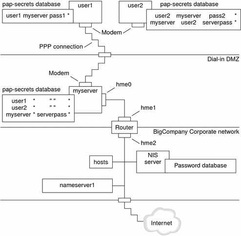
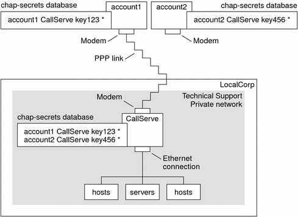

Previous
Previous
Planning for Authentication on a Link
This section contains planning information for providing authentication on the PPP link. Chapter 19, Setting Up PPP Authentication (Tasks) contains tasks for implementing PPP authentication at your site.
PPP offers two types of authentication, PAP, which is described in detail in Password Authentication Protocol (PAP) and CHAP, which is described in Challenge-Handshake Authentication Protocol (CHAP).
Before you set up authentication on a link, you must choose which authentication protocol best meets your site's security policy. Then, you set up the secrets file and PPP configuration files for the dial-in machines, or callers' dial-out machines, or both types of machines. For information about choosing the appropriate authentication protocol for your site, see Why Use PPP Authentication?.
This section includes the following information:
Planning information for both PAP and CHAP authentication
Explanations of the sample authentication scenarios that are shown in Figure 16-3 and Figure 16-4
For tasks about setting up authentication, see Chapter 19, Setting Up PPP Authentication (Tasks).
Before You Set Up PPP Authentication
Setting up authentication at your site should be an integral part of your overall PPP strategy. Before implementing authentication, you should assemble the hardware, configure the software, and test the link.
Table 16-5 Prerequisites Before Configuring AuthenticationInformation | For Instructions |
|---|---|
Tasks for configuring a dial-up link | |
Tasks for testing the link | |
Security requirements for your site | Your corporate security policy. If you do not have a policy, setting up PPP authentication gives you an opportunity to create a security policy. |
Suggestions about whether to use PAP or CHAP at your site | Why Use PPP Authentication?. For more detailed information about these protocols, refer to Authenticating Callers on a Link. |
Examples of PPP Authentication Configurations
This section contains examples of authentication scenarios to be used in the procedures in Chapter 19, Setting Up PPP Authentication (Tasks).
Example of a Configuration Using PAP Authentication
The tasks in Configuring PAP Authentication show how to set up PAP authentication over the PPP link. The procedures use as an example a PAP scenario that was created for the fictitious “Big Company” in Example of a Configuration for Dial-up PPP.
Big Company wants to enable its users to work from home. The system administrators want a secure solution for the serial lines to the dial-in server. UNIX-style login that uses the NIS password databases has served Big Company's network well in the past. The system administrators want a UNIX-like authentication scheme for calls that come in to the network over the PPP link. So, the administrators implement the following scenario that uses PAP authentication.
Figure 16-3 Example of a PAP Authentication Scenario (Working From Home)The system administrators create a dedicated dial-in DMZ that is separated from the rest of the corporate network by a router. The term DMZ comes from the military term “demilitarized zone.” The DMZ is an isolated network that is set up for security purposes. The DMZ typically contains resources that a company offers to the public, such as web servers, anonymous FTP servers, databases, and modem servers. Network designers often place the DMZ between a firewall and a company's Internet connection.
The only occupants of the DMZ that is pictured in Figure 16-3 are the dial-in server myserver and the router. The dial-in server requires callers to provide PAP credentials, including user names and passwords, when setting up the link. Furthermore, the dial-in server uses the login option of PAP. Therefore, the callers' PAP user names and passwords must correspond exactly to their UNIX user names and passwords in the dial-in server's password database.
After the PPP link is established, the caller's packets are forwarded to the router. The router forwards the transmission to its destination on the corporate network or on the Internet.
Example of a Configuration Using CHAP Authentication
The tasks in Configuring CHAP Authentication show how to set up CHAP authentication. The procedures use as an example a CHAP scenario to be created for the fictitious LocalCorp that was introduced in Example of a Configuration for a Leased-Line Link.
LocalCorp provides connectivity to the Internet over a leased line to an ISP. The Technical Support department within LocalCorp generates heavy network traffic. Therefore, Technical Support requires its own, isolated private network. The department's field technicians travel extensively and need to access the Technical Support network from remote locations for problem-solving information. To protect sensitive information in the private network's database, remote callers must be authenticated in order to be granted permission to log in.
Therefore, the system administrators implement the following CHAP authentication scenario for a dial-up PPP configuration.
Figure 16-4 Example of a CHAP Authentication Scenario (Calling a Private Network)The only link from the Technical Support network to the outside world is the serial line to the dial-in server's end of the link. The system administrators configure the laptop computer of each field service representative for PPP with CHAP security, including a CHAP secret. The chap-secrets database on the dial-in server contains the CHAP credentials for all machines that are allowed to call in to the Technical Support network.
Where to Go for More Information About Authentication
Choose from the following:
See Authenticating Callers on a Link and the pppd(1M) man page.